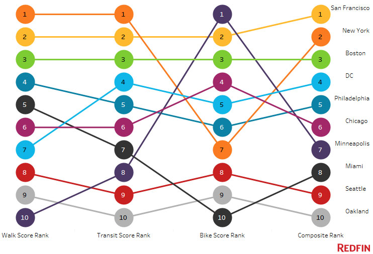

Top 10 American Cities for Living Without a Car in 2017

Living without a car in America: First Impressions
Are you tired of sitting in traffic every day and wish you could be set free in a place where the city moves you around, rather than sticks you in place? Walkable paths, bikeable streets, and public transit which is as dependable as it is affordable is just one part of what makes great cities great, but a very important element indeed! In addition to promoting physical and mental health, these elements go a long way to making living without a car possible.
So where are these centers of car-less freedom?
Redfin’s latest report combines Walk, Transit and Bike score data to determine the best cities in the U.S. for living without a car. This top 10 list has both a few obvious destinations, but I must admit, I was a little bit surprised by a few of these. At the top of my surprise, was Minneapolis. Now, to be fair, I have never been to Minneapolis, so it is hard for me to judge. But I have never noticed Minneapolis on a list of cities with great transportation or heard people discussing how great it is to live in Minneapolis. Just goes to show that I might be in a bit of an echo chamber after all.
Further reading: Living Without a Car in America
In fact, Minneapolis is so bike friendly, that it is the only US city which made a list in 2016 of most bikeable cities worldwide. Despite it only obtaining a #7 ranking on Redfin’s aggregate report, Minneapolis is clearly a great place to be living without a car.
The only other surprise I saw on the list was Oakland, which scraped onto the list at #10. I probably should not be surprised by this with the influence of Silicon Valley gentrification. I have many friends living in Oakland, and I know for a fact they all own cars, but they get their fair share of hiking and biking time too. In a place with such amazing weather, you must expect people to be living without a car every chance they get!
Redfin’s top 10 list
Without further adieu, here is the start to finish top 10 list of Redfin’s best American cities for living without a car. Following the list, is an infographic explaining the aggregate ranking by which Redfin determined this top 10 list.
- San Francisco, California
- New York, New York
- Boston, Massachusetts
- Washington, D.C.
- Philadelphia, Pennsylvania
- Chicago, Illinois
- Minneapolis, Minnesota
- Miami, Florida
- Seattle, Washington
- Oakland, California
How The Cities Compare in Each Category
Top 10 cities by composite score 
Source: Walk Score
Read the full report on Redfin’s website, where they include interesting blurbs about what each city on the list is doing to promote infrastructure which allows for car-free living!
Are you living without a car? Tell us!
If you are living in one of these cities, or another city without a car, tell us about your day! How do you get around? Is it easy or hard? What do you love about living without a car, and where do you see the shortcomings? Please let us know by leaving a comment below, or connect with me directly at @JudsonLMoore. Be well!